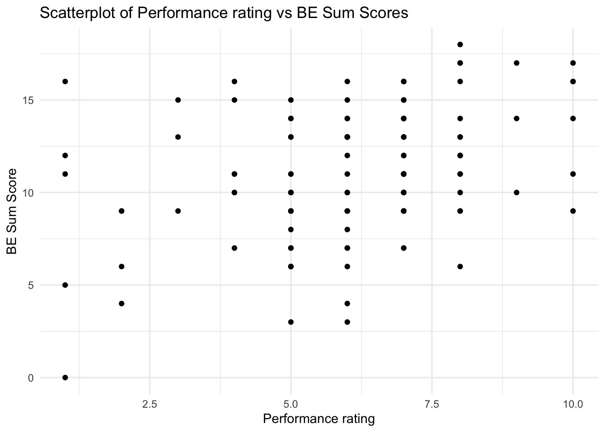

8.1 Data preparation
The following data preparations are the basis for all analyses related to the Bulls Eye for Athletes (BEA) study. Code for scale step alterations and some of the modified data frames are presented next to their related sub-analysis to make the workflow more comprehensible.
Code
#loading bulls eye for athletes dataset
BullsEye_merged_data_final_without_comp_level <- read_excel("BullsEye_merged_data_final.xlsx")
rename <- dplyr::rename
#renaming bulls eye items from Swedish to English
BullsEye_merged_data_final_without_comp_level <-
BullsEye_merged_data_final_without_comp_level %>%
rename(
BE_Competition = BE_Tavling,
BE_Training = BE_Traning,
BE_PreparationRecovery = BE_Forberedelser,
BE_Life = BE_Livet,
BE_Obstacles_Sport = BE_Hinder_Idrotten,
BE_Obstacles_Life = BE_Hinder_Livet,
BE_Competition_test2 = BE_Tavling_test2,
BE_Training_test2 = BE_Traning_test2,
BE_PreparationRecovery_test2 = BE_Forberedelser_test2,
BE_Life_test2 = BE_Livet_test2,
BE_Obstacles_Sport_test2 = BE_Hinder_Idrotten_test2,
BE_Obstacles_Life_test2 = BE_Hinder_Livet_test2
)
#adding competition level
comp_level_BE <- read_excel("comp_level_bulls eye.xlsx")
BullsEye_merged_data_final <- full_join(BullsEye_merged_data_final_without_comp_level,
comp_level_BE,
by = "Användarnamn")
#data corrections for BullsEye_merged_data_final
#age reported as year of birth
BullsEye_merged_data_final$Demografi.Alder[BullsEye_merged_data_final$Användarnamn == "1054fmsc" &
BullsEye_merged_data_final$Demografi.Alder == 95] <- 24
BullsEye_merged_data_final$Demografi.Alder[BullsEye_merged_data_final$Användarnamn == "1180smpq" &
BullsEye_merged_data_final$Demografi.Alder == 91] <- 28
BullsEye_merged_data_final$Demografi.Alder[BullsEye_merged_data_final$Användarnamn == "1183qhst" &
BullsEye_merged_data_final$Demografi.Alder == 93] <- 26
#participant stopped practice sport by test2 so values at test2 therefore not included
variables_to_na_1086fcfd <- c(
"BE_Competition_test2",
"BE_Training_test2",
"BE_PreparationRecovery_test2",
"BE_Life_test2",
"BE_Obstacles_Sport_test2",
"BE_Obstacles_Life_test2",
"SMS-2.1_test2",
"SMS-2.2_test2",
"SMS-2.3_test2",
"SMS-2.4_test2",
"SMS-2.5_test2",
"SMS-2.6_test2",
"SMS-2.7_test2",
"SMS-2.8_test2",
"SMS-2.9_test2",
"SMS-2.10_test2",
"SMS-2.11_test2",
"SMS-2.12_test2",
"SMS-2.13_test2",
"SMS-2.14_test2",
"SMS-2.15_test2",
"SMS-2.16_test2",
"SMS-2.17_test2",
"SMS-2.18_test2"
)
BullsEye_merged_data_final[BullsEye_merged_data_final$Användarnamn == "1086fcfd", variables_to_na_1086fcfd] <- NA
#rename Valuing Questionnaire items abbrevation from VLQ to VQ
BullsEye_merged_data_final <- BullsEye_merged_data_final %>%
rename_with( ~ gsub("^VLQ", "VQ", .), starts_with("VLQ"))
#rename SMS-2 variables
names(BullsEye_merged_data_final) <- gsub("SMS-2\\.", "SMS_2_", names(BullsEye_merged_data_final))
#rename CSAI-2R variables
names(BullsEye_merged_data_final) <- gsub("CSAI-2R\\.", "CSAI_2R_", names(BullsEye_merged_data_final))
#create date and time difference variables, for survey 1 and survey 2
# Ensure the variables are in POSIXct format
BullsEye_merged_data_final$Färdig_surveys_test1 <- as.POSIXct(BullsEye_merged_data_final$Färdig_surveys_test1, format = "%Y-%m-%d %H:%M")
BullsEye_merged_data_final$Färdig_surveys_test2 <- as.POSIXct(BullsEye_merged_data_final$Färdig_surveys_test2, format = "%Y-%m-%d %H:%M")
# Calculate the time difference in hours (for survey 1 and survey 2)
BullsEye_merged_data_final$time_latency_survey_1_2_hours <- as.numeric(
difftime(
BullsEye_merged_data_final$Färdig_surveys_test2,
BullsEye_merged_data_final$Färdig_surveys_test1,
units = "hours"
)
)
# Calculate the time difference in days (for survey 1 and survey 2)
BullsEye_merged_data_final$time_latency_survey_1_2_days <- as.numeric(
difftime(
BullsEye_merged_data_final$Färdig_surveys_test2,
BullsEye_merged_data_final$Färdig_surveys_test1,
units = "days"
)
)
#create date and time difference variables, for survey 1 and bulls eye 1
# Ensure the variables are in POSIXct format
BullsEye_merged_data_final$Färdig_surveys_test1 <- as.POSIXct(BullsEye_merged_data_final$Färdig_surveys_test1, format = "%Y-%m-%d %H:%M")
BullsEye_merged_data_final$Skapat <- as.POSIXct(BullsEye_merged_data_final$Skapat, format = "%Y-%m-%d %H:%M:%S")
# Calculate the time difference in hours (for survey 1 and bulls eye 1)
BullsEye_merged_data_final$time_latency_survey1_bulls_eye1_hours <- as.numeric(
difftime(
BullsEye_merged_data_final$Skapat,
BullsEye_merged_data_final$Färdig_surveys_test1,
units = "hours"
)
)
# Calculate the time difference in days (for survey 1 and bulls eye 1)
BullsEye_merged_data_final$time_latency_survey1_bulls_eye1_days <- as.numeric(
difftime(
BullsEye_merged_data_final$Skapat,
BullsEye_merged_data_final$Färdig_surveys_test1,
units = "days"
)
)
#create date and time difference variables, for bulls eye 1 and bulls eye 2
# Ensure the variables are in POSIXct format
BullsEye_merged_data_final$Skapat <- as.POSIXct(BullsEye_merged_data_final$Skapat, format = "%Y-%m-%d %H:%M:%S")
BullsEye_merged_data_final$Skapat_test2 <- as.POSIXct(BullsEye_merged_data_final$Skapat_test2, format = "%Y-%m-%d %H:%M:%S")
# Calculate the time difference in hours (for bulls eye 1 and bulls eye 2)
BullsEye_merged_data_final$time_latency_bulls_eye1_2_hours <- as.numeric(
difftime(
BullsEye_merged_data_final$Skapat_test2,
BullsEye_merged_data_final$Skapat,
units = "hours"
)
)
# Calculate the time difference in days (for bulls eye 1 and bulls eye 2)
BullsEye_merged_data_final$time_latency_bulls_eye1_2_days <- as.numeric(
difftime(
BullsEye_merged_data_final$Skapat_test2,
BullsEye_merged_data_final$Skapat,
units = "days"
)
)
#have checked and all date and time variables are correct
filter <- dplyr::filter
#hockeystudien bulls eye data:
sheet1 <- read_excel("hockeystudien intervention_bulls eye.xlsx", sheet = 1)
sheet1_filtered <- sheet1 %>%
filter(`Instansens namn` == "Vecka 1") %>%
distinct(`Användarnamn`, .keep_all = TRUE)
sheet2 <- read_excel("hockeystudien intervention_bulls eye.xlsx", sheet = 2)
sheet2_filtered <- sheet2 %>%
filter(`Instansens namn` == "Vecka 1") %>%
distinct(`Användarnamn`, .keep_all = TRUE)
merged_data_hockeystudien_BE <- full_join(sheet1_filtered, sheet2_filtered, by = "Användarnamn")
#hockeystudien demographics
hockeystudien_intervention_demographics <- read_excel("hockeystudien intervention_demographics.xlsx", sheet = 1)
#corecting age for a participant in the df
hockeystudien_intervention_demographics$Demografi.Alder[hockeystudien_intervention_demographics$Användarnamn == "1077dhrv" &
hockeystudien_intervention_demographics$Demografi.Alder == 6] <- 26
#merge df BE and demographics from hockeystudien
merged_data_hockeystudien_BE_demographics <- full_join(merged_data_hockeystudien_BE,
hockeystudien_intervention_demographics,
by = "Användarnamn")
#following in the hockeystudien study already exists in the bulls eye study, therefore mask:
#mask 1029spns, 1061bgmb, 1043gsnq, 1046pkbz, 1062xhqd, 1070mfqq
#1073znwk is also masked due to not completing the dart board ratings in BEA (only other parts of BEA) and therefore not contributing with any values for the statistical analyses
usernames_to_exclude <- c("1029spns",
"1061bgmb",
"1043gsnq",
"1046pkbz",
"1062xhqd",
"1070mfqq",
"1073znwk")
filtered_data <- merged_data_hockeystudien_BE_demographics %>%
filter(!(`Användarnamn` %in% usernames_to_exclude))
hockeystudien_bulls_eye_modified_data <- filtered_data %>%
mutate(`Användarnamn` = paste0(`Användarnamn`, "_hockeystudien")) %>% # Append "_hockeystudien" to each value
rename(
BE_Competition = Tavling,
BE_Training = Traning,
BE_PreparationRecovery = Forberedelser,
BE_Life = Livet,
BE_Obstacles_Sport = HinderSkala1,
BE_Obstacles_Life = HinderSkala2
)
#preparations for merging datasets into superfinal version (bulls eye + hockeystudien_bulls eye)
hockeystudien_bulls_eye_modified_data <- hockeystudien_bulls_eye_modified_data %>%
mutate(from_hockeystudien = 1)
BullsEye_merged_data_final <- BullsEye_merged_data_final %>%
mutate(from_hockeystudien = 0)
bulls_eye_merged_superfinal_data <- bind_rows(hockeystudien_bulls_eye_modified_data,
BullsEye_merged_data_final) #use for analyses
#BE items (dartboard), adjust (-1) to enable Rasch analysis
BE_adjust <- c(
"BE_Competition",
"BE_Training",
"BE_PreparationRecovery",
"BE_Life",
"BE_Competition_test2",
"BE_Training_test2",
"BE_PreparationRecovery_test2",
"BE_Life_test2"
)
bulls_eye_merged_superfinal_data[, BE_adjust] <- lapply(bulls_eye_merged_superfinal_data[, BE_adjust], function(x)
x - 1)
#"Hinder", reverse items (low value = low in values-based living and compatible with other values items) and adjust (-1) to enable Rasch analysis
Hinder_reverse_and_adjust <- c(
"BE_Obstacles_Sport",
"BE_Obstacles_Life",
"BE_Obstacles_Sport_test2",
"BE_Obstacles_Life_test2"
)
bulls_eye_merged_superfinal_data[, Hinder_reverse_and_adjust] <- lapply(bulls_eye_merged_superfinal_data[, Hinder_reverse_and_adjust], function(x)
8 - x - 1)
#ADAQ, reverse (higher value = higher PF) and adjust (-1) to enable Rasch analysis
ADAQ_reverse_and_adjust <- c("ADAQ.1",
"ADAQ.2",
"ADAQ.3",
"ADAQ.4",
"ADAQ.5",
"ADAQ.6",
"ADAQ.7")
bulls_eye_merged_superfinal_data[, ADAQ_reverse_and_adjust] <- lapply(bulls_eye_merged_superfinal_data[, ADAQ_reverse_and_adjust], function(x)
8 - x - 1)
#SWLS, adjust (-1) to enable Rasch analysis
SWLS_adjust <- c("SWLS.1", "SWLS.2", "SWLS.3", "SWLS.4", "SWLS.5")
bulls_eye_merged_superfinal_data[, SWLS_adjust] <- lapply(bulls_eye_merged_superfinal_data[, SWLS_adjust], function(x)
x - 1)
#VQ adjustments
#some items were reversed in the scoring when exporting data from the web platform, but no items should be reversed in VQ when using each subscale separately. Some items were therefore reversed back.
#items 1, 2, 6, 8, 10 (the VQ obstruction subscale) were reversed in the scoring and needs to be reversed back.
#VQ already starts at zero and does therefore not need to be adjusted prior to Rasch analysis.
bulls_eye_merged_superfinal_data <- bulls_eye_merged_superfinal_data %>%
mutate(across(c("VQ.1", "VQ.2", "VQ.6", "VQ.8", "VQ.10"), ~ 6 - .))
#SMS-2 adjustments
#SMS-2 consists of 18 items and 6 sub-scales divided into the following according to Pelletier et al. (2013). Some items were reversed in the scoring when exporting data from the web platform, but no items should be reversed in SMS-2. Some items were therefore reversed back.
#Intrinsic regulation: items 3, 9, 17 (none reversed = correct)
#Integrated regulation: items 4, 11, 14 (none reversed = correct)
#Identified regulation: items 6, 12, 18 (none reversed = correct)
#Introjected regulation: items 1, 7, 16 (items 1 and 7 are reversed in the scoring and needs to be reversed back)
#External regulation: items 5, 8, 15 (items 5 and 8 are reversed in the scoring and needs to be reversed back)
#Amotivated regulation: 2, 10, 13 (items 2, 10 and 13 are reversed in the scoring and needs to be reversed back)
#(back) reverse scoring for items 1, 7, 5, 8, 2, 10, 13
SMS2_items_to_reverse <- c("SMS_2_1", "SMS_2_7", "SMS_2_5",
"SMS_2_8", "SMS_2_2", "SMS_2_10", "SMS_2_13")
bulls_eye_merged_superfinal_data <- bulls_eye_merged_superfinal_data %>%
mutate(across(all_of(SMS2_items_to_reverse), ~ 8 - .))
#SMS-2, adjust (-1) to enable Rasch analysis
SMS2_adjust <- c("SMS_2_1",
"SMS_2_2",
"SMS_2_3",
"SMS_2_4",
"SMS_2_5",
"SMS_2_6",
"SMS_2_7",
"SMS_2_8",
"SMS_2_9",
"SMS_2_10",
"SMS_2_11",
"SMS_2_12",
"SMS_2_13",
"SMS_2_14",
"SMS_2_15",
"SMS_2_16",
"SMS_2_17",
"SMS_2_18"
)
bulls_eye_merged_superfinal_data[, SMS2_adjust] <- lapply(bulls_eye_merged_superfinal_data[, SMS2_adjust], function(x)
x - 1)
#CSAI-2R adjustments
#CSAI-2R consists of 17 items and 3 sub-scales divided into the following according to Lundqvist & Hassmén (2005). Items will be renamed so they correspond to item numbers in Lundqvist & Hassmén (2005). Some items were reversed in the scoring when exporting data from the web platform (self-confidence sub-scale items), but no items needs to be reversed in CSAI-2R when looking at each sub-scale separately. Items in the self-confidence sub-scale were therefore reversed back.
#items in brackets are the original item numbers found in Lundqvist & Hassmén (2005), items prior to brackets were the item numbers used on the web platform used for data collection in this study
#cognitive anxiety sub-scale: items 2 (7), 5 (10), 7 (13), 9 (16), 13 (22)
#somatic anxiety sub-scale: items 1 (5), 3 (8), 6 (11), 10 (17), 12 (20), 14 (23), 16 (26)
#self-confidence sub-scale: items 4 (9), 8 (15), 11 (18), 15 (24), 17 (27)
#rename CSAI-2R item names to correspond with Lundqvist & Hassmén (2005):
item_mapping_CSAI2R <- c(
"CSAI_2R_1" = "CSAI_2R_5",
"CSAI_2R_2" = "CSAI_2R_7",
"CSAI_2R_3" = "CSAI_2R_8",
"CSAI_2R_4" = "CSAI_2R_9",
"CSAI_2R_5" = "CSAI_2R_10",
"CSAI_2R_6" = "CSAI_2R_11",
"CSAI_2R_7" = "CSAI_2R_13",
"CSAI_2R_8" = "CSAI_2R_15",
"CSAI_2R_9" = "CSAI_2R_16",
"CSAI_2R_10" = "CSAI_2R_17",
"CSAI_2R_11" = "CSAI_2R_18",
"CSAI_2R_12" = "CSAI_2R_20",
"CSAI_2R_13" = "CSAI_2R_22",
"CSAI_2R_14" = "CSAI_2R_23",
"CSAI_2R_15" = "CSAI_2R_24",
"CSAI_2R_16" = "CSAI_2R_26",
"CSAI_2R_17" = "CSAI_2R_27"
)
names(bulls_eye_merged_superfinal_data) <- sapply(
names(bulls_eye_merged_superfinal_data),
function(x) ifelse(x %in% names(item_mapping_CSAI2R), item_mapping_CSAI2R[x], x)
)
#(back) reverse scoring for self-confidence sub-scale items 9, 15, 18, 24, 27
CSAI2R_items_to_reverse <- c("CSAI_2R_9", "CSAI_2R_15", "CSAI_2R_18", "CSAI_2R_24", "CSAI_2R_27")
bulls_eye_merged_superfinal_data <- bulls_eye_merged_superfinal_data %>%
mutate(across(all_of(CSAI2R_items_to_reverse), ~ 5 - .))
#CSAI-2R, adjust (-1) to enable Rasch analysis
CSAI2R_adjust <- c(
"CSAI_2R_5", "CSAI_2R_7", "CSAI_2R_8", "CSAI_2R_9", "CSAI_2R_10", "CSAI_2R_11",
"CSAI_2R_13", "CSAI_2R_15", "CSAI_2R_16", "CSAI_2R_17", "CSAI_2R_18", "CSAI_2R_20",
"CSAI_2R_22", "CSAI_2R_23", "CSAI_2R_24", "CSAI_2R_26", "CSAI_2R_27"
)
bulls_eye_merged_superfinal_data[, CSAI2R_adjust] <- lapply(
bulls_eye_merged_superfinal_data[, CSAI2R_adjust],
function(x) x - 1
)
#adding recoded bulls eye items (from the BEA Rasch analysis, needed here as the loading of data needs to be repeated for each quarto file)
recode <- dplyr::recode
bulls_eye_merged_superfinal_data <- bulls_eye_merged_superfinal_data %>%
mutate(
# Recoding BE_Competition (0+1; 2+3; 4+5)
BE_Competition_recoded = recode(
BE_Competition,
`0` = 0, `1` = 0,
`2` = 1, `3` = 1,
`4` = 2, `5` = 2,
`6` = 3
),
# Recoding BE_Training (0+1)
BE_Training_recoded = recode(
BE_Training,
`0` = 0, `1` = 0,
`2` = 1,
`3` = 2,
`4` = 3,
`5` = 4,
`6` = 5
))8.2 Subjective performance rating and BEA validity analysis
Validity between the subjective performance rating and BEA is investigated by correlation analysis. The subjective performance rating has not undergone Rasch analysis (since it is only one item), thus participants sum scores will be correlated. Since sum scores are ordinal data, Spearman’s rank correlation is applied.
Code
#complete cases data frame for validity analyses
#removing missing values in relevant items for complete cases analysis
#only BE items and one item from the other scales in the bulls eye study
#is needed (in this case the SubjektivPrestation item)
#this is because there are no missing values for the other scales
#after the intervention study (Hockeystudien) participants have been removed
#therefore this data frame will work for all validity analyses
items_validity_analyses <- c(
"BE_Competition_recoded",
"BE_Training_recoded",
"BE_PreparationRecovery",
"BE_Life",
"SubjektivPrestation"
)
data_complete_cases <- bulls_eye_merged_superfinal_data[complete.cases(bulls_eye_merged_superfinal_data[, items_validity_analyses]), ]
#155 participants to begin with
#33 participants from the intervention study (Hockeystudien) were removed (did not complete any scale beside Bulls Eye)
#1 participant (not from the intervention study) who completed the other scales but not the dartboard in Bulls Eye (only other parts of BE) and were therefore removed
#results in a complete cases data frame with 121 participants
nrow(data_complete_cases)[1] 121Code
#item preparation and plot of sum scores
performance_rating <- data_complete_cases[, c("SubjektivPrestation")]
BE_items <- data_complete_cases[, c(
"BE_Competition_recoded",
"BE_Training_recoded",
"BE_PreparationRecovery",
"BE_Life"
)]
BE_items_names <- names(BE_items)
performance_rating_names <- names(performance_rating)
#computing sum scores
data_complete_cases_performance_rating_BE <- data_complete_cases %>%
mutate(
performance_rating_sum = rowSums(select(., all_of(
performance_rating_names
)), na.rm = TRUE),
BE_sum = rowSums(select(., all_of(BE_items_names)), na.rm = TRUE)
)
#plot of sum scores (raw data, not ranked)
ggplot(data_complete_cases_performance_rating_BE, aes(x = performance_rating_sum, y = BE_sum)) +
geom_point() +
labs(
title = "Scatterplot of Performance rating vs BE Sum Scores",
x = "Performance rating",
y = "BE Sum Score"
) +
theme_minimal()
Code
# Correlation Matrix (spearman-method)
Parameter1 | Parameter2 | rho | 95% CI | S | p
--------------------------------------------------------------------------------
performance_rating_sum | BE_sum | 0.33 | [0.16, 0.48] | 1.98e+05 | < .001***
p-value adjustment method: Holm (1979)
Observations: 121Some participants did not complete BEA and the subjective performance rating during the same day as intended. Therefore, a sensitivity analysis is conducted.
Code
#creating data frame with only participants that completed Bulls Eye and the other scales during the same day
#since 17 participants did not (has already been checked in a prior validity analysis), 104 participants will remain in the sensitivity analysis
data_complete_cases_less_than_1day <- subset(data_complete_cases, time_latency_survey1_bulls_eye1_days < 1)Code
#sensitivity correlation analysis BEA and subjective performance rating
performance_rating_less1day <- data_complete_cases_less_than_1day[, c("SubjektivPrestation")]
BE_items_less1day <- data_complete_cases_less_than_1day[, c(
"BE_Competition_recoded",
"BE_Training_recoded",
"BE_PreparationRecovery",
"BE_Life"
)]
BE_items_less1day_names <- names(BE_items_less1day)
performance_rating_less1day_names <- names(performance_rating_less1day)
#computing sum scores
data_complete_cases_performance_rating_BE_less1day <- data_complete_cases_less_than_1day %>%
mutate(
performance_rating_sum = rowSums(select(
., all_of(performance_rating_less1day_names)
), na.rm = TRUE),
BE_sum = rowSums(select(., all_of(
BE_items_less1day_names
)), na.rm = TRUE)
)
#compute Spearman's rank correlation
correlation_performance_rating_BE_less1day <- correlation(data_complete_cases_performance_rating_BE_less1day[, c("performance_rating_sum", "BE_sum")], method = "spearman")
print(correlation_performance_rating_BE_less1day)# Correlation Matrix (spearman-method)
Parameter1 | Parameter2 | rho | 95% CI | S | p
--------------------------------------------------------------------------------
performance_rating_sum | BE_sum | 0.35 | [0.16, 0.51] | 1.22e+05 | < .001***
p-value adjustment method: Holm (1979)
Observations: 104Result from sensitivity analysis correlation is close to the original correlation.